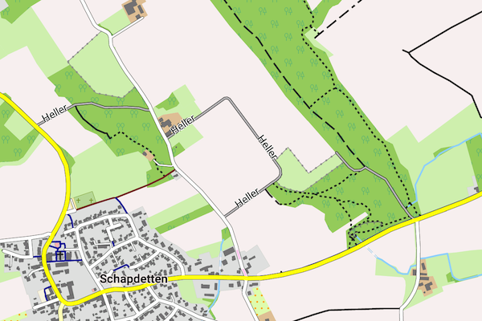

Um die Freizeitkarten korrekt anzuzeigen, ist ein passendes Design (Theme) zu installieren und dessen Nutzung in der Karten-App zu konfigurieren. Wurde das Design der Freizeitkarte nicht installiert bzw. aktiviert, so wird von den Karten-Programmen meist auf ein Basisdesign zurück gegriffen. Die Darstellung wird dann von den Musterdarstellungen auf dieser Webseite stark abweichen und viele Kartenelemente werden fehlen.
Hinweise zum Download:
- Klick auf das Netbook Icon im PC-Browser: das Design wird auf den Personal-Computer geladen
- Klick auf das Locus Map Icon im Android-Browser: das Design wird nach Locus Map geladen
- Klick auf das OruxMaps Icon im Android-Browser: das Design wird nach OruxMaps geladen
Design freizeitkarte:
Das Design "freizeitkarte" verwendet helle Farben und ist für die allgemeine Nutzung ausgelegt.
|
Locus Free / Pro freizeitkarte-locus 0.3 MB |
|
Cruiser, OruxMaps, ... freizeitkarte-v4 0.3 MB |
Design fzk-outdoor-contrast:

Das Design "fzk-outdoor-contrast" verwendet kräftige Farben und ist für die Nutzung "Outdoor" ausgelegt.
|
Locus Free / Pro fzk-outdoor-contrast-locus 0.3 MB |
|
Cruiser, OruxMaps, ... fzk-outdoor-contrast-v4 0.3 MB |
|
c:geo, CacheBox, ... fzk-outdoor-contrast 0.2 MB LETZTE AUSGABE SUPPORT EINGESTELLT |
Design fzk-outdoor-soft

Das Design "fzk-outdoor-soft" verwendet gegenüber "fzk-outdoor-contrast" abgeschwächte Kontraste.
|
Locus Free / Pro fzk-outdoor-soft-locus 0.3 MB |
|
Cruiser, OruxMaps, ... fzk-outdoor-soft-v4 0.3 MB |